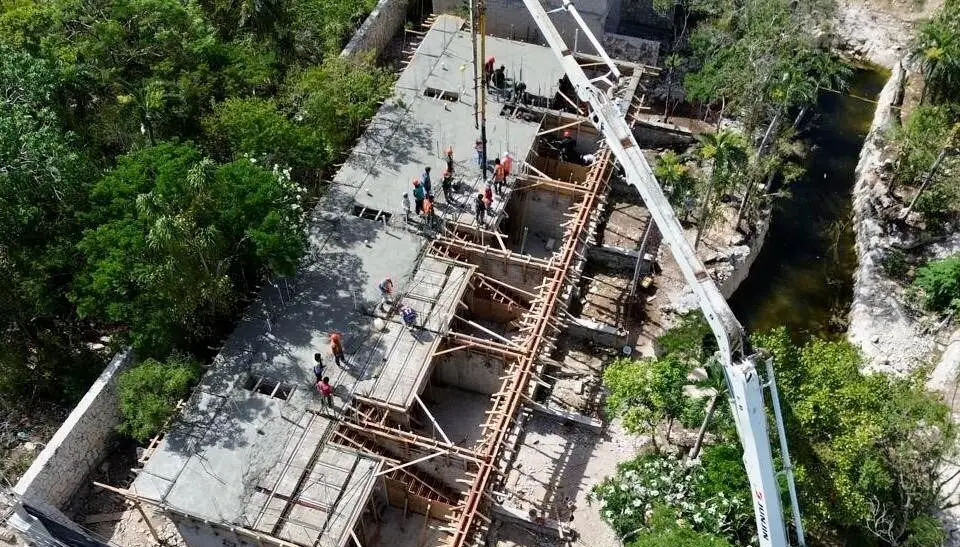

Diseñamos y fabricamos cocinas para departamentos y villas de Malecón Tajamar: carpintería a medida resistente a la humedad, cubiertas de cuarzo o piedra natural, islas, electrodomésticos empotrados e iluminación, instaladas por nuestros carpinteros. Malecón Tajamar es el distrito frente a la laguna junto a Puerto Cancún, en el municipio de Benito Juárez: torres residenciales con penthouses y departamentos con vista a la laguna, edificios boutique y townhouses a lo largo del malecón, a minutos de la Zona Hotelera.

Distribución, materiales y electrodomésticos con vistas 3D.
MDF lacado, chapa o madera tropical sólida con herrajes de cierre suave.
Cuarzo, granito, mármol o piedra sinterizada, plantilla e instalación.
Islas con asientos, tarja o parrilla y sus conexiones.
Hornos, parrillas, campanas, cavas y lavavajillas empotrados.
LED bajo gabinete, colgantes y circuitos nuevos.
La melamina común se hincha cerca del mar; usamos tableros resistentes a la humedad, cantos sellados, bisagras inoxidables y ventilación detrás de los equipos para que las puertas sigan rectas.
En edificios trabajamos dentro de los horarios del edificio y los ductos existentes; en villas podemos mover muros, agregar islas y cocinas exteriores.
En edificios, la obra de cocina requiere aprobación de la administración, sobre todo para gas, extracción y cambios hidráulicos.
Tiene un gerente de proyecto bilingüe y un solo grupo de WhatsApp, reporte semanal con fotos y video, presupuesto en vivo y pagos por avance tras verificar cada etapa; la mayoría de los dueños solo viaja para la entrega.
| Alcance | Incluye | Precio (MXN) |
|---|---|---|
| Cocina de departamento llave en mano | Carpintería, cuarzo, electrodomésticos instalados | $180,000–$450,000 |
| Cocina premium de villa | Madera, piedra, isla, electrodomésticos | $450,000–$1,200,000 |
| Cubierta de cuarzo o granito | Suministro e instalación | $4,000–$12,000 por ml |
| Isla o península | Estructura, cubierta y conexiones | $45,000–$160,000 por pieza |
Páginas útiles: Malecón Tajamar: oferta completa y calculadora · Remodelación de Baños en Malecón Tajamar · Interiorismo y Amueblado en Malecón Tajamar · Construcción de Albercas en Malecón Tajamar
Envíe el departamento o lote y lo que quiere hacer; recibe una cotización con alcance y precios cerrados en pocos días.
Cotizar por WhatsAppSu opinión ayuda a otros propietarios a decidir, y a nosotros a mejorar.
Escribir una reseñaVer reseñas en Google